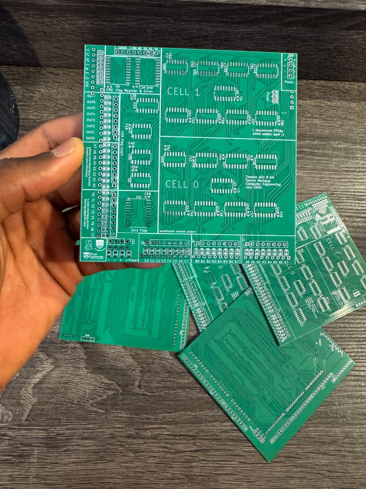
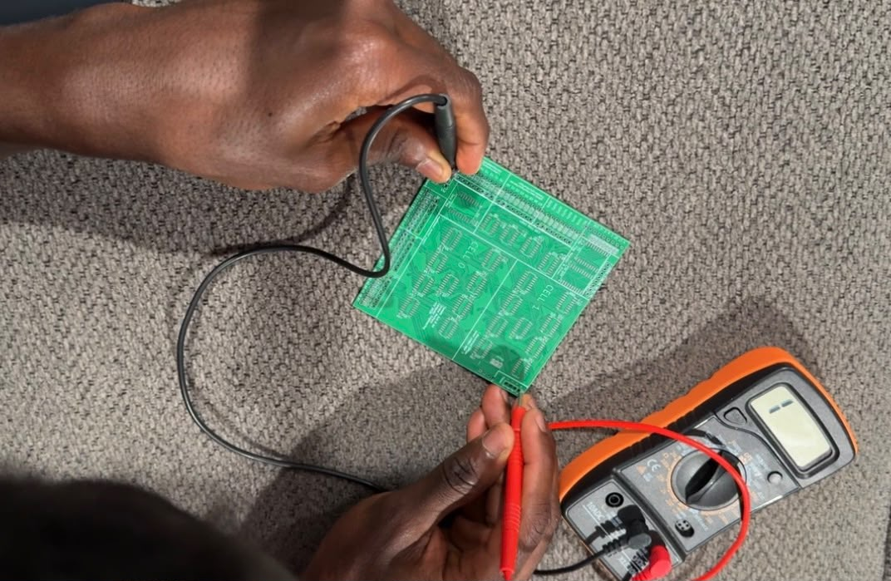

Dispatch
PCBs arrive
Five boards. Continuity on power is clean. No islands. Every trace is one I remember placing.
The PCBs all just arrived! I ordered 5 of them, and I tested them with a continuity meter, particularly for the power connections, and I am happy to log that there are no islands! It is beautiful watching the board of such sophisticated nature, realizing that I remember placing every single trace!

Fig. — Lot 07Five boards · as received

Fig. — PowerContinuity · no islands
Fig. — In the roundThe boards as they landed
I had to admit to my roommate: isn't it hilarious that all this I have been working on, I did it all by myself? Buying a multimeter, an FPGA, using KiCad, down to this project. It has been a long and interesting journey!
The boards look stunning! Now, the soldering begins.